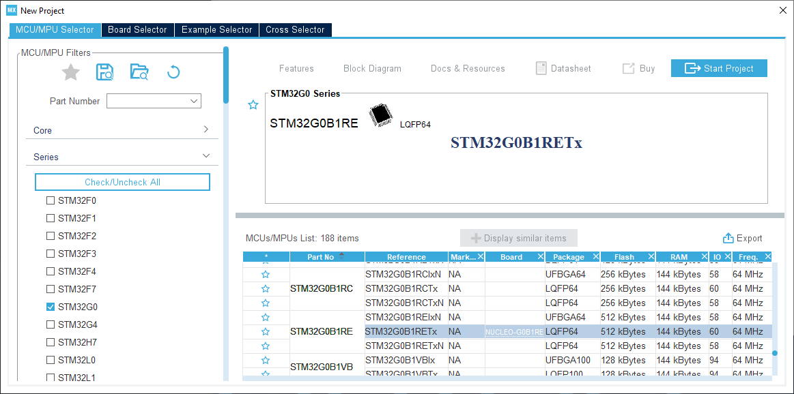
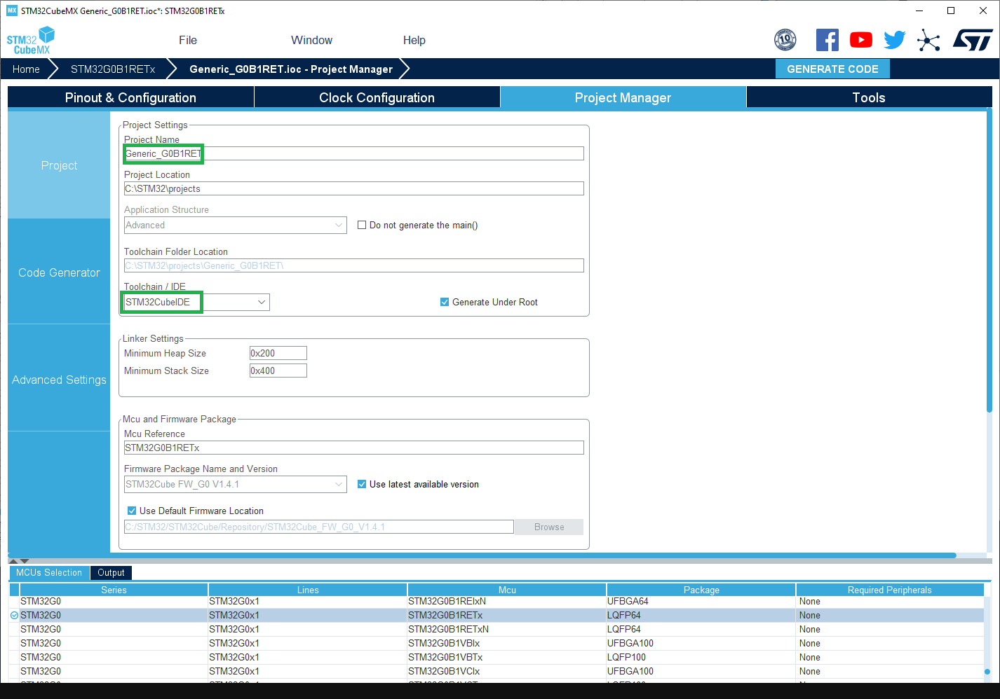
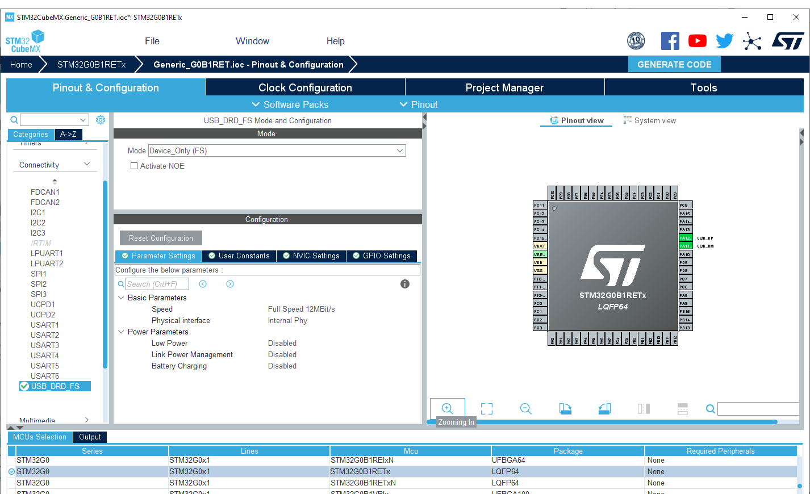
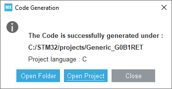

Define a new generic variant
Before adding a specific board, it is a good practice to add the generic entry of the STM32 MCU as it is possible to use it with the specific board.
Note
A folder name can reference several MCU references so several boards entry could be added. Not only the one of the specific board.
Tip
The example of all the steps below is available in PR #1398.
1 - Get the Arduino_Core_STM32 git repository
Note
If you do not plan to share your board, you can skip this step.
To be able to contribute and create a Pull Requests you should use the Arduino_Core_STM32 git repository instead of the packaged version
See Using git repository.
2 - Find the MCU folder in the core
Go to the variants folder of the STM32 core (See STM32 core source files).
Example: To add variant for the Nucleo-G0B1RE search for the folder name including G0B1RET reference in the STM32G0xx subfolder of the variants folder. In this case:
Several files are present as stated in Generated variant files.
It misses only the default linker script named ldscript.ld and the Generic System Clock configuration.
Important
STM32CubeMX is used to generate them. So it have to be installed first.
3 - Create new project with STM32CubeMX
1. Open STM32CubeMX and create a new project. Select the targeted MCU; this example uses the STM32G0B1RET.
Create new CubeMX project...

2. Configure the project in the Project Manager tab:
- Set a project name
- Set a project location
- Select the IDE: STM32CubeIDE
Configure the project...

4 - System Clock configuration
generic_clock.c contains the default system clock configuration which is empty by default. So the default clock
at reset will be used as stated by the warning:
WEAK void SystemClock_Config(void)
{
/* SystemClock_Config can be generated by STM32CubeMX */
#warning "SystemClock_Config() is empty. Default clock at reset is used."
}
Important
For generic board the internal clock is used: mainly HSI or CSI or MSI depending of the series.
-
Go to Pinout tab, enable the peripherals which require specific clock configuration (not needed for peripherals clocked by
HCLKx, orAPBxclock).Clock configuration means
clock mux selection(if any) andfrequency, see the STM32CubeMX user manual to get help on the Clock Configuration tab and refer to the mcu documentation to get each peripheral constraints.Usually below peripheral have to be enabled and input clock source constraint have to be checked. STM32CubeMX will help and warn if clock configuration is not correct else refer to the mcu documentation:
USB: 48MHz clock source.SDIOorSDMMC: 48MHzLPUARTx: clock source must be in the range: [3 x baud rate, 4096 x baud rate] so ensure to be able to use9600 bps.ADCand/orDAC: on some series they are specific constraints.
In this example only
USBneeds to be enabled as other peripherals default clock are correct by default.Pinout configuration...

-
Configure the clock:
- Set
PLL Source MuxtoHSIif it exists else setHSIasSystem Clock Mux. Or any other internal clock. - Try to set the CPU clock and
HCLKto the maximum frequencies, STM32CubeMX will automatically configure the clock tree and resolve conflict if any. Sometimes due to some constraints (ex: USB) maximum frequency is not reachable.
- Set
-
Generate the code by clicking on Generate Code button and open the folder.
Generate the project...

5 - Add the default linker script
Copy the STM32YYxxxxxx_FLASH.ld generated by STM32CubeMX in the variant folder and rename it: ldscript.ld
Example for the Nucleo-G0B1RE: STM32G0B1RETX_FLASH.ld
Important
In order to have a common linker script for all MCU the RAM and FLASH definitions have to be updated.
As the linker script is preprocessed it is possible to use some definitions based on board entry and defined by the platform.txt.
-Wl,--defsym=LD_FLASH_OFFSET={build.flash_offset} -Wl,--defsym=LD_MAX_SIZE={upload.maximum_size} -Wl,--defsym=LD_MAX_DATA_SIZE={upload.maximum_data_size}
With:
LD_FLASH_OFFSET: Flash base offset mainly used when a custom bootloader is used. Default set to 0.LD_MAX_DATA_SIZE: RAM sizeLD_MAX_SIZE: Flash size
Edit the ldscript.ld file accordingly:
/* Memories definition */
MEMORY
{
- RAM (xrw) : ORIGIN = 0x20000000, LENGTH = 144K
- FLASH (rx) : ORIGIN = 0x8000000, LENGTH = 512K
+ RAM (xrw) : ORIGIN = 0x20000000, LENGTH = LD_MAX_DATA_SIZE
+ FLASH (rx) : ORIGIN = 0x8000000 + LD_FLASH_OFFSET, LENGTH = LD_MAX_SIZE - LD_FLASH_OFFSET
}
6 - Update the default System Clock
Use STM32CubeMX to configure the MCU's internal clock sources. A generic variant must not assume a board-specific crystal or external clock, so use the internal source supported by the MCU family, such as HSI, CSI, MSI, or HSI48 when available.
In CubeMX, select the exact MCU and package, enable the internal oscillator required by the family, and configure the PLL and clock tree. Check the generated SystemCoreClock, HCLK, and APB frequencies against the MCU limits, including voltage scaling and flash latency. Resolve all CubeMX clock warnings before copying the generated SystemClock_Config() body into generic_clock.c.
For a generic variant, only configure peripheral clocks that are common to every board using the MCU variant. Check the internal-clock requirements of enabled peripherals, including ADC, DAC, timers, I2C, and any family-specific kernel clocks. If USB or SDIO/SDMMC is enabled by default, provide the exact 48 MHz source required by that peripheral. Otherwise, leave board-dependent peripheral clock selection to the specific board variant.
Example
```diff
WEAK void SystemClock_Config(void)
{
- /* SystemClock_Config can be generated by STM32CubeMX */
-#warning "SystemClock_Config() is empty. Default clock at reset is used."
+ RCC_OscInitTypeDef RCC_OscInitStruct = {};
+ RCC_ClkInitTypeDef RCC_ClkInitStruct = {};
+ RCC_PeriphCLKInitTypeDef PeriphClkInit = {};
+
+ /** Configure the main internal regulator output voltage
+ */
+ HAL_PWREx_ControlVoltageScaling(PWR_REGULATOR_VOLTAGE_SCALE1);
+ /** Initializes the RCC Oscillators according to the specified parameters
+ * in the RCC_OscInitTypeDef structure.
+ */
+ RCC_OscInitStruct.OscillatorType = RCC_OSCILLATORTYPE_HSI | RCC_OSCILLATORTYPE_HSI48;
+ RCC_OscInitStruct.HSIState = RCC_HSI_ON;
+ RCC_OscInitStruct.HSI48State = RCC_HSI48_ON;
+ RCC_OscInitStruct.HSIDiv = RCC_HSI_DIV1;
+ RCC_OscInitStruct.HSICalibrationValue = RCC_HSICALIBRATION_DEFAULT;
+ RCC_OscInitStruct.PLL.PLLState = RCC_PLL_ON;
+ RCC_OscInitStruct.PLL.PLLSource = RCC_PLLSOURCE_HSI;
+ RCC_OscInitStruct.PLL.PLLM = RCC_PLLM_DIV1;
+ RCC_OscInitStruct.PLL.PLLN = 8;
+ RCC_OscInitStruct.PLL.PLLP = RCC_PLLP_DIV2;
+ RCC_OscInitStruct.PLL.PLLQ = RCC_PLLQ_DIV2;
+ RCC_OscInitStruct.PLL.PLLR = RCC_PLLR_DIV2;
+ if (HAL_RCC_OscConfig(&RCC_OscInitStruct) != HAL_OK) {
+ Error_Handler();
+ }
+ /** Initializes the CPU, AHB and APB buses clocks
+ */
+ RCC_ClkInitStruct.ClockType = RCC_CLOCKTYPE_HCLK | RCC_CLOCKTYPE_SYSCLK
+ | RCC_CLOCKTYPE_PCLK1;
+ RCC_ClkInitStruct.SYSCLKSource = RCC_SYSCLKSOURCE_PLLCLK;
+ RCC_ClkInitStruct.AHBCLKDivider = RCC_SYSCLK_DIV1;
+ RCC_ClkInitStruct.APB1CLKDivider = RCC_HCLK_DIV1;
+
+ if (HAL_RCC_ClockConfig(&RCC_ClkInitStruct, FLASH_LATENCY_2) != HAL_OK) {
+ Error_Handler();
+ }
+ /** Initializes the peripherals clocks
+ */
+ PeriphClkInit.PeriphClockSelection = RCC_PERIPHCLK_USB;
+ PeriphClkInit.UsbClockSelection = RCC_USBCLKSOURCE_HSI48;
+ if (HAL_RCCEx_PeriphCLKConfig(&PeriphClkInit) != HAL_OK) {
+ Error_Handler();
+ }
}
```
Tip
Pay attention to the default value of HAL RCC structures. CubeMx set it to 0 but it produces warning.
Simply remove the 0 like this:
- RCC_OscInitTypeDef RCC_OscInitStruct = {0};
- RCC_ClkInitTypeDef RCC_ClkInitStruct = {0};
+ RCC_OscInitTypeDef RCC_OscInitStruct = {};
+ RCC_ClkInitTypeDef RCC_ClkInitStruct = {};
7 - Declare the board
It is still to add the menu and add relevant information (Flash and SRAM sizes, ...)
Tip
See Arduino boards.txt specification for further options.
Warning
Pay attention to alphabetical order.
Edit boards.txt file, then:
- Find the menu part where to add the generic entry. In this example the
GenG0menu. - Copy all the boards entry from the
board_entry.txtfile to this section. - Check if the
build.product_line=is correct and match theSTM32YYXXxxMCU version. - Check the
upload.maximum_size=andupload.maximum_data_size=, sometimes not all the flash or RAM are available because they are not contiguous.
Example
GenG0.menu.pnum.GENERIC_G081RBTX.build.variant=STM32G0xx/G071R(6-8)T_G071RB(I-T)_G081RB(I-T)
+# Generic G0B1RBTx
+GenG0.menu.pnum.GENERIC_G0B1RBTX=Generic G0B1RBTx
+GenG0.menu.pnum.GENERIC_G0B1RBTX.upload.maximum_size=131072
+GenG0.menu.pnum.GENERIC_G0B1RBTX.upload.maximum_data_size=147456
+GenG0.menu.pnum.GENERIC_G0B1RBTX.build.board=GENERIC_G0B1RBTX
+GenG0.menu.pnum.GENERIC_G0B1RBTX.build.product_line=STM32G0B1xx
+GenG0.menu.pnum.GENERIC_G0B1RBTX.build.variant=STM32G0xx/G0B1R(B-C-E)T_G0C1R(C-E)T
+
+# Generic G0B1RCTx
+GenG0.menu.pnum.GENERIC_G0B1RCTX=Generic G0B1RCTx
+GenG0.menu.pnum.GENERIC_G0B1RCTX.upload.maximum_size=262144
+GenG0.menu.pnum.GENERIC_G0B1RCTX.upload.maximum_data_size=147456
+GenG0.menu.pnum.GENERIC_G0B1RCTX.build.board=GENERIC_G0B1RCTX
+GenG0.menu.pnum.GENERIC_G0B1RCTX.build.product_line=STM32G0B1xx
+GenG0.menu.pnum.GENERIC_G0B1RCTX.build.variant=STM32G0xx/G0B1R(B-C-E)T_G0C1R(C-E)T
+
+# Generic G0B1RETx
+GenG0.menu.pnum.GENERIC_G0B1RETX=Generic G0B1RETx
+GenG0.menu.pnum.GENERIC_G0B1RETX.upload.maximum_size=524288
+GenG0.menu.pnum.GENERIC_G0B1RETX.upload.maximum_data_size=147456
+GenG0.menu.pnum.GENERIC_G0B1RETX.build.board=GENERIC_G0B1RETX
+GenG0.menu.pnum.GENERIC_G0B1RETX.build.product_line=STM32G0B1xx
+GenG0.menu.pnum.GENERIC_G0B1RETX.build.variant=STM32G0xx/G0B1R(B-C-E)T_G0C1R(C-E)T
+
+# Generic G0C1RCTx
+GenG0.menu.pnum.GENERIC_G0C1RCTX=Generic G0C1RCTx
+GenG0.menu.pnum.GENERIC_G0C1RCTX.upload.maximum_size=262144
+GenG0.menu.pnum.GENERIC_G0C1RCTX.upload.maximum_data_size=147456
+GenG0.menu.pnum.GENERIC_G0C1RCTX.build.board=GENERIC_G0C1RCTX
+GenG0.menu.pnum.GENERIC_G0C1RCTX.build.product_line=STM32G0C1xx
+GenG0.menu.pnum.GENERIC_G0C1RCTX.build.variant=STM32G0xx/G0B1R(B-C-E)T_G0C1R(C-E)T
+
+# Generic G0C1RETx
+GenG0.menu.pnum.GENERIC_G0C1RETX=Generic G0C1RETx
+GenG0.menu.pnum.GENERIC_G0C1RETX.upload.maximum_size=524288
+GenG0.menu.pnum.GENERIC_G0C1RETX.upload.maximum_data_size=147456
+GenG0.menu.pnum.GENERIC_G0C1RETX.build.board=GENERIC_G0C1RETX
+GenG0.menu.pnum.GENERIC_G0C1RETX.build.product_line=STM32G0C1xx
+GenG0.menu.pnum.GENERIC_G0C1RETX.build.variant=STM32G0xx/G0B1R(B-C-E)T_G0C1R(C-E)T
+
# Upload menu
8 - Verify your changes
Then verify your changes with the CheckVariant example.
Note
This example will print on the default Serial so ensure to use this one, same for the LED_BUILTIN.
Important
An issue with the Arduino IDE 2.x prevents the board to appears in the menu. Follow this workaround to get it working: issue #1030